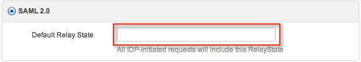

Configuring SAML 2.0 in BlueJeans
- Sign in to BlueJeans at www.bluejeans.com as a user with rights to edit SAML configuration.
- This is a test.
- First
- Second
- Select the Admin tab, and then the Security tab, as shown at the bottom of this page.
- Click the SAML Single Sign On button.
-
Download the following Certificate. Add it to the Certificate Path in Blue Jeans by selecting Browse and uploading it.
Sign in to the Okta Admin app to generate this variable. -
Enter the following text for the Login URL.
Sign in to the Okta Admin app to generate this variable. -
Modify the following text for the Password Change URL, where <company name> is the name of your company. For example, if your company is named acme, enter https://acme.bluejeans.com.
https://<company name>.bluejeans.com -
Modify the following text for the Logout URL, where <company name> is the name of your company.
https://<company name>.bluejeans.com - Fill in the User ID and Email fields with the correct information for your organization.
Note: If the User ID field is not visible, uncheck Pick User ID from <saml2:NameID> element. This box is checked in the screenshot below. - Copy the information in the RelayState field in BlueJeans. In Okta, paste this information into the Default Relay State field, as shown below.
 -
Click Save Changes.
- Done!
Comments? Please send any comments on these instructions to DedicatedSAMLComplaintLine@okta.com.